Avalara 稅務提供者
連接到 AvaTax
安裝 Avalara 稅務提供者後，您需要設定其整合功能。
Note
請確保該外掛已安裝並設定為「啟用」狀態（設定 → 本地外掛）。若要啟用此外掛，請點擊 編輯 並勾選 已啟用 核取方塊。
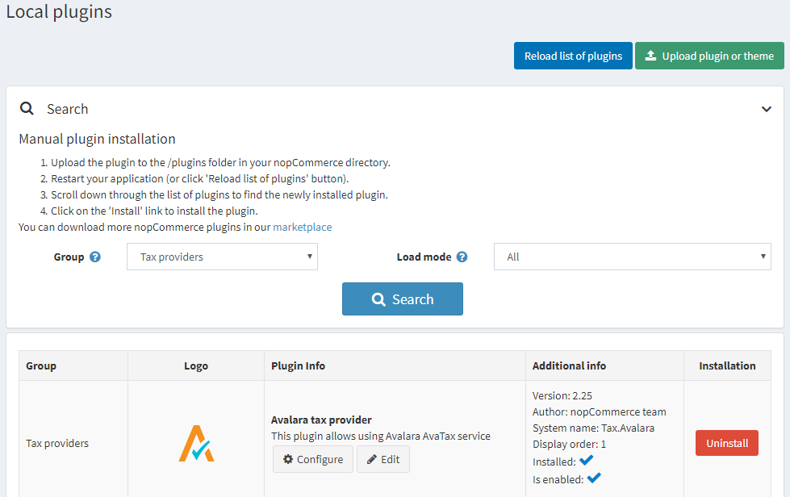
若要設定 Avalara 稅務提供者，請前往 設定 → 稅務提供者。
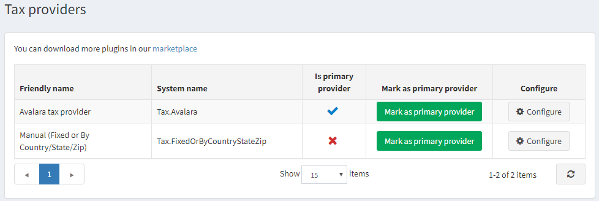
點擊 標記為主要提供者。
點擊清單中 Avalara 稅務提供者選項旁邊的 設定。
請依照頁面頂端的說明建立帳戶。 接著進行外掛設定；當滑鼠游標停留在「?」圖示上時，會顯示各欄位的功能說明。
設定您的 AvaTax 憑證：
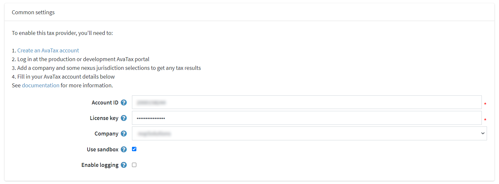
- Account ID：在 AvaTax 帳戶啟用過程中提供。
- License key：在 AvaTax 帳戶啟用過程中提供。
- Company：AvaTax 管理控制台中的公司設定檔識別碼。
- Use sandbox：啟用後即可提交測試交易。
- Enable logging：啟用後會記錄所有對 Avalara 服務的請求。
設定稅額計算設定：
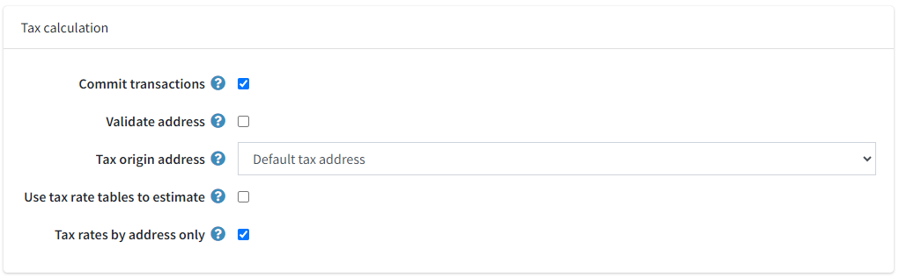
- Commit transactions：啟用後可在交易儲存後立即提交。
- Validate address：啟用後可驗證所輸入的地址。
- Tax origin address：用於向 Avalara 服務發送稅務請求。
- Use tax rate tables to estimate：決定是否使用稅率表進行預估。此設定將作為目錄頁面的預設稅額計算方式，並在結帳期間調整與核對為最終交易稅額。稅率會根據郵遞區號（僅限美國）在 Avalara 定期更新的檔案中查詢（參閱排程任務）。
- Tax rates by address only：若上述設定未勾選，則會顯示此選項。啟用它可僅根據地址獲取稅率（可減少 API 呼叫次數，但可能會影響結果準確度）。
設定稅務免稅設定：
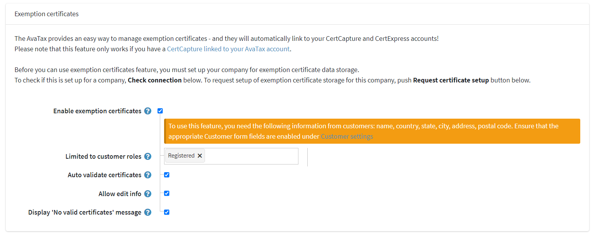
- Enable exemption certificates：啟用後可啟用免稅證明功能。
- Limited to customer roles：用於限制可存取此功能的顧客角色。
- Auto validate certificates：啟用後可自動驗證新上傳或建立的證明。
- Allow edit info：啟用後允許顧客在管理證明時編輯其資訊（如姓名、電話、地址）。
- Display 'No valid certificates' message：啟用後，若顧客在訂單確認頁面上沒有有效的證明，將會顯示相關訊息。
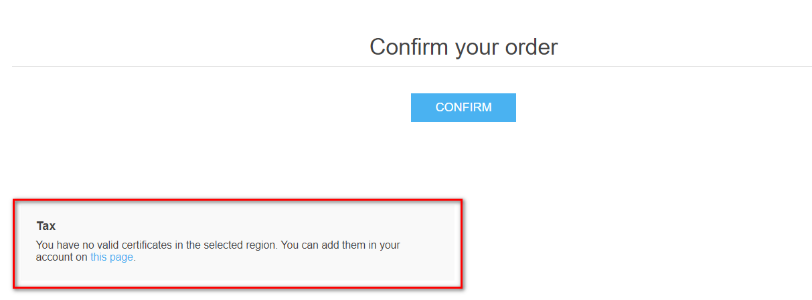
Tip
此訊息文字可在語言資源中進行編輯。
儲存 並點擊 測試連線 按鈕以執行連線測試。
若要執行「測試稅額計算」，請填寫頁面底部的地址表單（請注意，nopCommerce Avalara 稅務外掛僅針對美國地址提交交易），然後點擊 測試稅務交易。
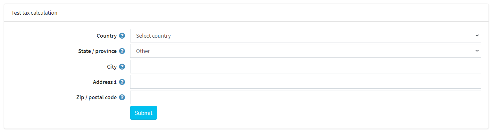
指派 AvaTax 代碼
前往 設定 → 稅務類別。
在頁面的右上角，您會看到品牌化的 Avalara 稅務代碼 按鈕。點擊它將會顯示以下的下拉式選單：
Important
只有當 Avalara 外掛在 設定 → 稅務提供者 頁面中被選為主要稅務提供者時，才會顯示 Avalara 稅務代碼 按鈕。
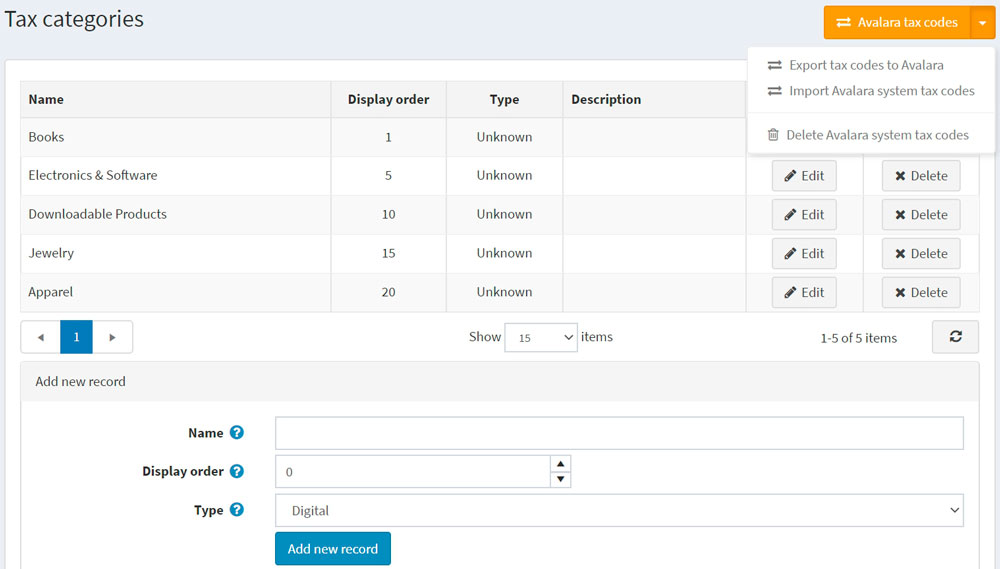
- 匯出稅務代碼至 Avalara – 將您商店中的所有代碼匯出至您的 AvaTax 後台。
- 匯入 Avalara 系統稅務代碼 – 從 Avalara 匯入所有的 AvaTax 稅務代碼。
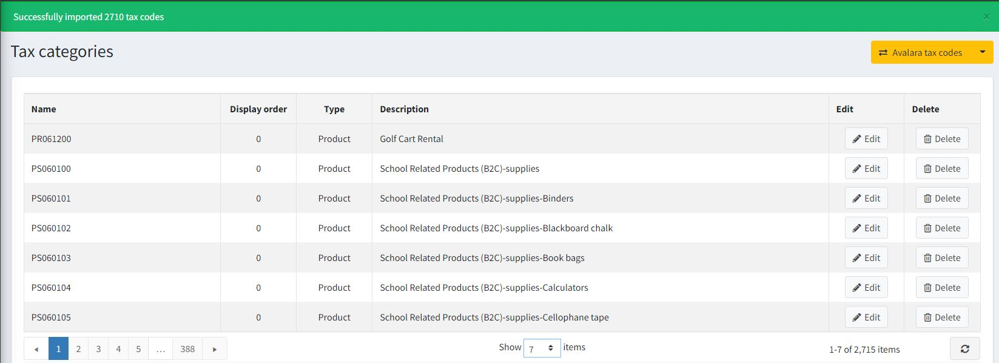
- 刪除 Avalara 系統稅務代碼 – 刪除所有從 Avalara 匯出的代碼。
指定 AvaTax 系統稅碼給商品
前往 目錄 → 商品。
選擇一項商品以開啟商品詳細資料畫面，並點擊 編輯。
在 商品詳細資料 畫面的 價格 面板中，從 稅務類別 欄位的下拉式選單中指定合適的代碼。
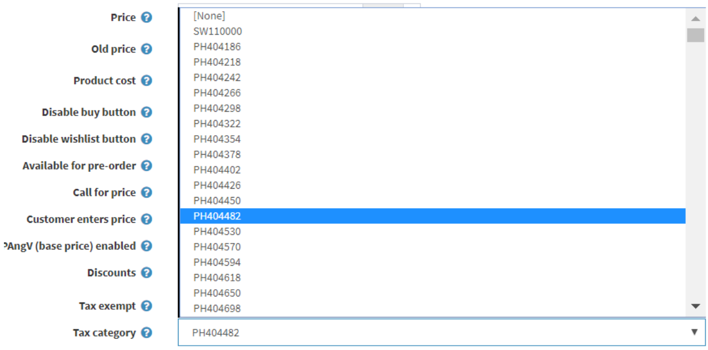
Important
請確保已輸入 SKU，以便在 AvaTax 後台進行更好的導覽。
點擊 儲存。
若要查看所有可用的 AvaTax 系統稅碼清單，請造訪 http://taxcode.avatax.avalara.com。
商品分類
Managed Tariff Code Classification 是 Avalara 提供的一項服務，用於將商品統一分類編碼（HS Code，即海關編碼）指派給您的商品目錄。一旦 Avalara 完成您所銷售商品的分類，即可在 AvaTax 計算中自動納入關稅編碼，或將其匯出以供您自己的商業應用程式使用。
海關當局使用海關編碼（HS Code）來計算所有國際貿易產品的關稅稅率。與銷售稅和使用稅代碼不同，關稅編碼並非全球通用。請為您銷往國際的產品指派完整合規的關稅編碼，以計算關稅與進口稅。
在 AvaTax 中，父層產品會被指派一個關稅編碼，而任何子層 SKU 都會繼承該分類。
在名稱相同的頁籤上啟用 Item Classification 功能。
指定要獲取 HS 分類代碼的目標國家。
使用 Save 按鈕儲存設定。
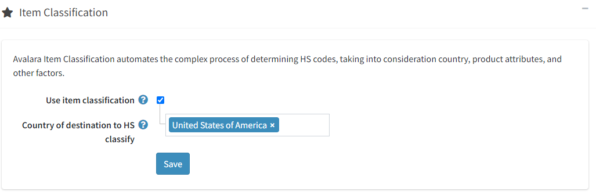
前往您 Avalara 個人帳戶中的 Item Classification settings。
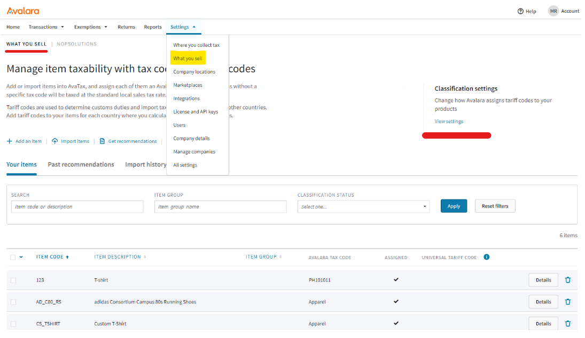
指定 webhook 的端點位址 -
{your.store.url}/avalara/item-classification-webhook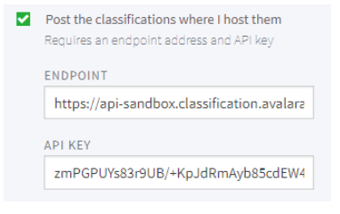
再次前往外掛設定頁面，指定應發送哪些產品進行分類。
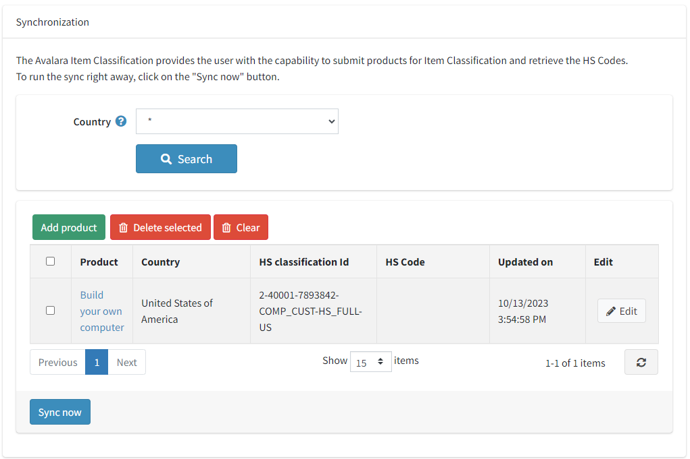
點擊 Sync now 按鈕，開始發送產品進行分類的流程。在收到 Avalara 服務的回應後，表格將會填入接收到的數值（您需要手動更新表格）。之後，這些接收到的分類代碼數值將會被轉移用於計算稅率。
驗證顧客地址
確保 Validate address 核取方塊已勾選；在這種情況下，地址將會自動進行驗證。
使用者將會看到以下畫面：
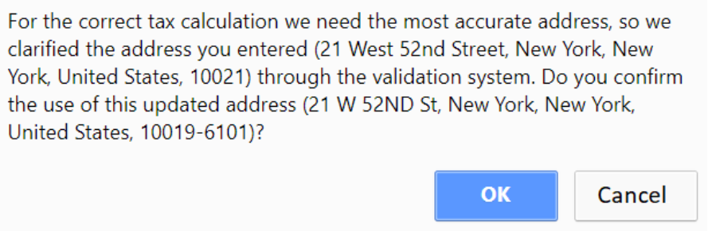
免稅 (Tax exemption)
使用此外掛啟用免稅有兩種方式：
在管理後台將 AvaTax 免稅類別指派給特定顧客或整個顧客角色：
點選 顧客 → 顧客 → 編輯顧客
找到反白顯示的 Entity use code 欄位，選取該欄位，並選擇適當的顧客類型代碼。
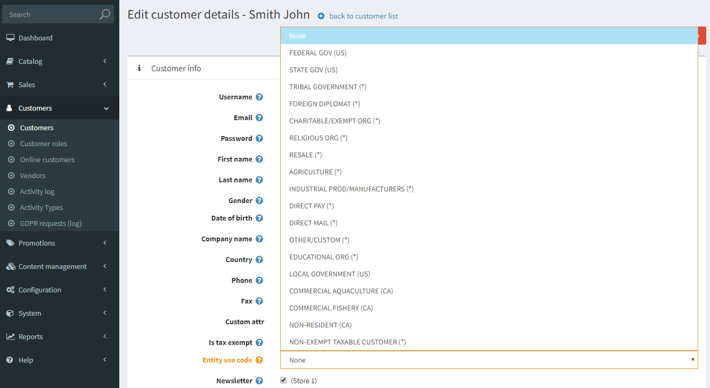
點選 儲存
Note
不需要勾選 免稅 (Tax exempt) 核取方塊：指派 Entity use code 即已足夠。
啟用免稅證明功能：
Important
您需要一個 CertCapture 帳戶 才能使此功能正常運作。
確保 啟用免稅證明 (Enable exemption certificates) 核取方塊已勾選；在這種情況下，顧客將能夠在購物前管理他們的免稅證明。
帳戶區域將會新增一個新頁面：
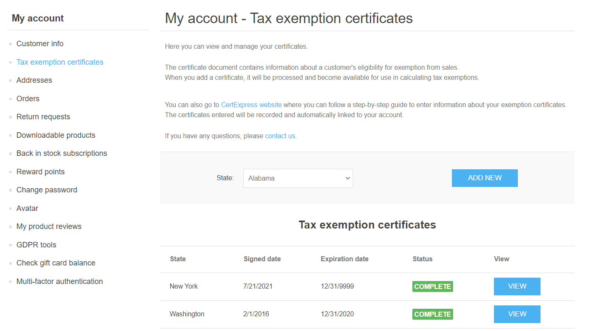